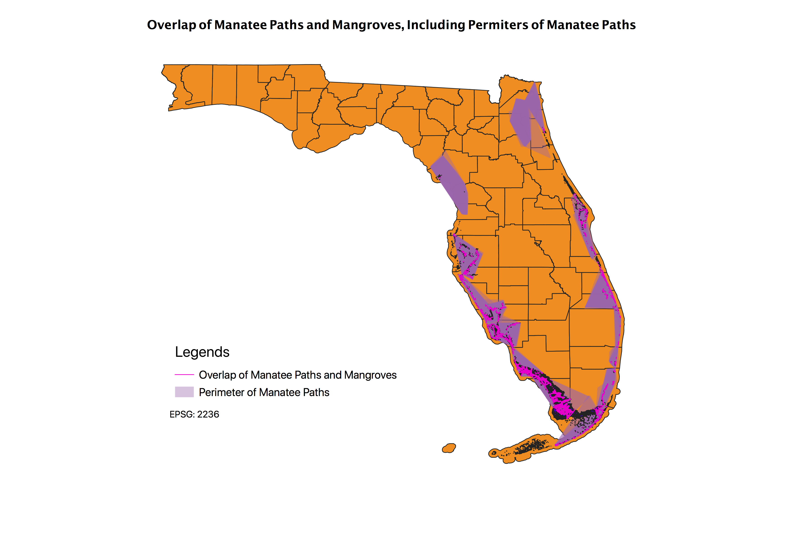

Homework 10: Geoprocessed Map
Jessica Gross
Where is the overlap between the manatee paths and the mangrove habitats in Florida?

The overlap is is mostly concentrated in the Southwest part of Florida, which makes sense because the mangroves dissapate as you go farther north.
For reference, the overlap is an intersect and the perimeter is a convex hull
Data used for this project
Unforutnately, the mangrove data would not upload because it was too big
Link to Intersection Shapefile
Manatee Path Shapefile
Perimeter Shapefile
Link to Mangrove Data
Link to Manatee Path Data